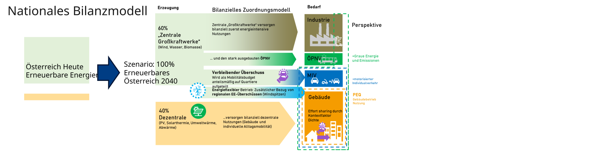

Sektorales Zielbild Energie
Nationale Szenarien für Erzeugung und Bedarf als Ausgangspunkt der Quartiersanforderungen
Aus dem allgemeinen Prinzip in Von nationalen Zielpfaden zur Quartiersbilanz folgt zunächst ein sektorales Zielbild. Hier werden nationale Jahresenergiemengen und Szenarien verglichen. Die anschließende Dichtekalibrierung steht in Kontextfaktor Dichte, die Ableitung und Anwendung des Mobilitätsbudgets in Kontextfaktor Mobilität. Das kumulierte Emissionsbudget folgt gesondert in Zielwert THG.
Energieallokation: Welchen Beitrag muss der Gebäudesektor leisten?
Prinzip der sektoralen Zuordnung
Die initiale Operationalisierung 2023 beruht auf der Streicher-basierten Herleitung: Das Szenario „Energieautarkie für Österreich 2050“ wurde von Schneider, Zelger und Klauda (2020) angepasst und im PEQ-Modell 2023 für den Zielhorizont 2040 weiterentwickelt (Schneider u. a. 2020, Abschn. 3.1, S. 3–6; Schneider u. a. 2023, Abschn. 6.1–6.2). Dieses historische Referenzmodell betrachtet ein vollständig erneuerbares österreichisches Energiesystem. Erneuerbare Erzeugung und verbleibende Energiebedarfe werden sektoral zugeordnet. Daraus ergeben sich der erforderliche Beitrag dezentraler Erzeugung im Gebäudesektor und ein Anteil zentral bereitgestellter erneuerbarer Energie für den motorisierten Individualverkehr (Schneider u. a. 2023, Abschn. 6.1–6.2, S. 12–16).
Die Primärstudie Energieautarkie für Österreich 2050 erschien im Dezember 2010. Sie versteht Energieautarkie als ausgeglichene jährliche Nettoenergiebilanz; zeitweiser Austausch bleibt möglich. Importierte graue Energie wird nicht als vollständig neu bilanzierte Größe einbezogen. Das Wachstumsszenario unterstellt jährlich 0,8 % Wachstum der Energiedienstleistungen beziehungsweise industriellen Bruttowertschöpfung; dies ist keine reine Bevölkerungsannahme (Streicher u. a. 2010, Zusammenfassung, S. iii–v). Die Übertragung in eine lokale Erzeugungsanforderung erfolgt durch Schneider et al. (2020); die späteren PEQ-Gutschriften stammen aus der Weiterentwicklung 2023 (Schneider u. a. 2020, Abschn. 3.1, S. 3–6; Schneider u. a. 2023, Abschn. 6.1–6.2). Energieautarkie, jährliche erneuerbare Deckung und Klimaneutralität sind deshalb nicht gleichzusetzen.
Eine dem Quartier zugerechnete Energiemenge ist deshalb weder automatisch lokal erzeugte Energie noch ein vertraglich gesicherter Strombezug. Im Bewertungsverfahren kann sie als virtuelle Gutschrift erscheinen. Der physische Energiefluss muss davon getrennt bilanziert werden.
Die Anforderungen an Quartiere werden aus einem nationalen Bilanzmodell abgeleitet. Dieses verknüpft die verfügbare erneuerbare Energie mit den Bedarfen der einzelnen Sektoren.

Im Referenzszenario sind dem Gebäudesektor 114,8 PJ/a Photovoltaikerzeugung und 137,6 PJ/a Strombedarf nach sektoraler Allokation zugeordnet. Der Zielsaldo beträgt −22,7 PJ/a (Schneider u. a. 2023, Tab. 6, S. 13). Diese jährlichen Größen beschreiben die sektorale Strombilanz. Für die primärenergetische Quartiersbewertung werden sie mit den zugehörigen Gewichtungen und Flächenbezügen verknüpft.
Ein Quartier muss damit nicht die gesamte nationale Versorgung lokal nachbilden. Seine Anforderungen müssen aber zu einer Verteilung passen, die auch für den übrigen Gebäudebestand und die anderen Sektoren aufgeht.
Aktuelle Operationalisierung (2026) auf Basis UBA Transition 2040 (2024)
Die aktuelle Operationalisierung 2026 umfasst die normierten UBA-Daten, den Szenarienvergleich und eine parametrische Berechnung. Die Rekalibrierung der sektoralen Zuordnung bleibt offen; bis zu deren Festlegung gelten die initialen Mobilitätsgutschriften 2023 unverändert. Die folgenden UBA-Werte sind eine veröffentlichte Szenariogrundlage und noch keine neue Allokation oder Deklarationsanforderung. WEM/WAM 2025 dienen als neuere Vergleichsszenarien, WEM/WAM 2023 als Vergleich derselben Modellgeneration wie Transition. WAM 2025 entspricht im Energieteil WAM NEKP 2024 (Umweltbundesamt 2025, 62).
Die Jahresangabe 2024 bezeichnet hier die Ausgabe mit Copyright 2024. Auf Titelblatt und Seitenfuß von REP-0880 steht „Wien 2023“; die Modellgeneration bleibt entsprechend 2023. Diese Datierung ändert weder Zieljahr noch Zahlenbasis (Umweltbundesamt 2024, Impressum).
Die Fortschreibung konzentriert sich auf die Elektrizitätsbilanz. Stromerzeugung, Strombedarf und Nettoimporte werden in PJ elektrischer Energie pro Jahr verglichen. Der energetische Endverbrauch aller Energieträger bleibt ein separater Sektorausweis im Datenmodell und geht nicht als Strombedarf in das Allokationsmodell ein. Verbrauch des Energiesektors, Transportverluste und elektrischer Umwandlungseinsatz sind gesonderte Bedarfspositionen. Der Umwandlungseinsatz ist bereits ein Strombedarf; der später erzeugte Wasserstoff darf nicht nochmals als Endstrom addiert werden.
| Stromerzeugung 2040 [PJ_el/a] | Transition 2040 | WEM 2025 | WAM 2025 | WEM 2023 | WAM 2023 |
|---|---|---|---|---|---|
| Wasserkraft | 173 | 167 | 176 | 174 | 176 |
| Windkraft | 105 | 65 | 87 | 69 | 87 |
| Photovoltaik | 149 | 53 | 107 | 54 | 107 |
| Biomasse inkl. Biomethan | 21 | 21 | 21 | 21 | 21 |
| Geothermie / sonstige Erzeugung¹ | 4 | 0 | 0 | 0 | 0 |
| Wasserstoff-Rückverstromung | 4 | 0 | 0 | 0 | 0 |
| Fossile Erzeugung | 1 | 33 | 15 | 27 | 15 |
| Publizierte Erzeugung gesamt | 457 | 339 | 406 | 346 | 406 |
| Nettoimporte (− = Export) | -7 | 38 | -10 | 21 | 1 |
| Strombedarf 2040 [PJ_el/a] | Transition 2040 | WEM 2025 | WAM 2025 | WEM 2023 | WAM 2023 |
|---|---|---|---|---|---|
| Verkehr | 90 | 76 | 72 | 67 | 70 |
| Gebäude | 108 | 132 | 123 | 134 | 122 |
| Industrie | 140 | 115 | 107 | 120 | 126 |
| Landwirtschaft | 4 | 5 | 4 | 5 | 4 |
| Verbrauch Sektor Energie | 34 | 28 | 40 | 25 | 34 |
| Transportverluste | 19 | 16 | 14 | 15 | 15 |
| Umwandlungseinsatz | 57 | 3 | 34 | 0 | 36 |
| Publizierter Strombedarf gesamt | 450 | 376 | 394 | 367 | 407 |
¹ Transition: Geothermie; die Vergleichstabellen verwenden die breitere Kategorie „Umgebungswärme etc.“. Striche bei WEM/WAM 2023 wurden in der übergebenen Normierung als null geführt.
| Szenario | Erzeugung: Komponenten − Gesamt | Bedarf: Komponenten − Gesamt | Erzeugung + Nettoimport − Bedarf |
|---|---|---|---|
| Transition 2040 | +0 | +2 | +0 |
| WEM 2025 | +0 | -1 | +1 |
| WAM 2025 | +0 | +0 | +2 |
| WEM 2023 | -1 | -1 | +0 |
| WAM 2023 | +0 | +0 | +0 |
Endenergie aller Energieträger im Vergleich
| Endenergie 2040 [PJ_end/a] | Transition 2040 | WEM 2025 | WAM 2025 | WEM 2023 | WAM 2023 |
|---|---|---|---|---|---|
| Verkehr | 151 | 279 | 268 | 325 | 295 |
| Industrie | 260 | 347 | 320 | 348 | 329 |
| Gebäude | 300 | 364 | 348 | 393 | 347 |
| Landwirtschaft | 11 | 12 | 12 | 13 | 12 |
| Publizierte Endenergie gesamt | 722 | 1003 | 948 | 1079 | 984 |
Der Endenergievergleich umfasst alle Energieträger und ist getrennt von den elektrischen Flüssen zu lesen (Umweltbundesamt 2024, Tab. A; Umweltbundesamt 2023b, Tab. B; Umweltbundesamt 2025, Tab. B).
Die publizierten Gesamtsummen bleiben neben den Komponentensummen erhalten. Die Bilanzreste werden weder auf Bedarfe verteilt noch durch erfundene Erzeugung oder Verlustflüsse ausgeglichen. Für WEM/WAM 2025 folgt die gelieferte Normierung Tabelle E auf S. 12 von REP-0995. Tabelle 19 auf S. 64 desselben Berichts enthält abweichende Erzeugungswerte, etwa 403 statt 406 PJ für WAM 2040. Dieser Quellenwiderspruch ist zusätzlich zu den Rundungsresten offen; die beiden Fassungen werden nicht vermischt (Umweltbundesamt 2025, Tab. E und 19). Für Transition bleibt REP-0880 Tabelle 16 maßgeblich, nicht die abweichend zusammengefasste Erzeugung in REP-0882.
Die Legacy-Kalibrierung wird über ihre belegten sektoralen Zuordnungen und Mobilitätsbudgets verglichen. Eine vollständige nationale Streicher-Stromtabelle in derselben Abgrenzung wie die UBA-Tabellen liegt im normierten Datenpaket nicht vor. Fehlende Werte werden deshalb nicht mit null oder einer UBA-Zahl ersetzt; auch die historischen Horizonte 2050 und 2040 werden nicht gleichgesetzt.
Ausbau und Bedarf: Ausgangsbilanz 2020 bis Zieljahr 2040
Als „heute“ dient ausdrücklich das Ausgangsjahr 2020 der Transition-Bilanz, nicht das Kalenderjahr 2026. Gegenüber 2020 steigt die publizierte jährliche Stromerzeugung von 249 auf 457 PJ und der Strombedarf von 257 auf 450 PJ. Gleichzeitig sinkt der gesamte energetische Endverbrauch von 1.053 auf 722 PJ. Die Elektrifizierung erhöht den Strombedarf, obwohl der Bedarf über alle Energieträger abnimmt (Umweltbundesamt 2024, Tab. A, 15 und 16).
Die folgende Grafik greift die Leserichtung des schematischen Sektorbilds auf: links Ausgangsertrag und zusätzlicher Ertrag, in der Mitte Erzeugung und Stromsystem, rechts Sektorbedarf und daneben der Vergleich mit 2020. Der untere, getrennte Sankey zeigt die notwendige Endenergieminderung. Die Linien beschreiben Jahresenergiemengen, keine installierten Leistungen und keine virtuellen PE-Gutschriften. Zentral/dezentral und MIV/ÖV werden erst durch ausdrücklich dokumentierte Parameter im Notebook unterschieden.
Interaktive Grafik in voller Breite öffnen
„Ausbau“ bezeichnet den zusätzlichen Jahresertrag je Technologie. Der Ersatz ausscheidender Anlagen, Volllaststunden, Witterung und Speicherleistungen müssten für eine Investitions- oder Leistungsplanung zusätzlich modelliert werden. Die Minderung des Endenergieverbrauchs beträgt nach publizierten Gesamtsummen 331 PJ, nach den gerundeten Sektorkomponenten 330 PJ. Beim Ziel-Strombedarf stehen 450 PJ Gesamtsumme einer Komponentensumme von 452 PJ gegenüber. Diese Differenzen werden ausgewiesen und nicht auf Sektoren umgelegt. Die optional auswählbare Ausgangsbilanz 2023 enthält zusätzliche Quellenwidersprüche und ist kein gleichwertiger Ersatz für den konsistenten Transition-Bezug 2020.
Das ausführbare Notebook Redaktion/transitionsszenarien/Berechnungen/Transition_2040.ipynb verbindet Eingabetabellen, Rechnungen und Ausgaben. Es erlaubt Varianten des dezentralen PV-Anteils, der Anteile MIV/ÖV/übriger Verkehr und zusätzlicher Strombedarfsminderung. Diese Eingriffe verändern ausschließlich gekennzeichnete Varianten; die UBA-Eingaben und geltenden Gutschriften bleiben erhalten. Die Stromminderung wird nicht zugleich als neue Endenergieprojektion ausgegeben: Dafür fehlen die technologiebezogenen Substitutionsannahmen.
Warum von Endenergie und Strom zu Primärenergie wechseln?
Das Zielbild beschreibt zunächst physische Energiemengen: Endenergie aller Energieträger beziehungsweise Strom als eigene Teilbilanz. Für die Quartiersbewertung werden die Energieträger anschließend mit Primärenergiefaktoren gewichtet. Dadurch werden beispielsweise Strom, Brennstoffe und Wärme auf einer gemeinsamen Bewertungsbasis zusammengeführt. Die Faktoren berücksichtigen die vorgelagerten Energieaufwendungen innerhalb der jeweiligen Bilanzgrenze. Das ist eine Bewertungsumrechnung; sie erzeugt keine zusätzlichen physischen Energieflüsse (Schneider 2026, Abschn. 3.2.3–3.2.4; Schneider u. a. 2025, Abschn. 2.2 und 2.6).
Für Energieträger beziehungsweise Bezugs- und Exportflüsse (i) und Zeitschritte (t) gilt schematisch:
\[ E_{\mathrm{PE}}=\sum_{i,t} E_{i,t}\,f_{\mathrm{PE},i,t}, \qquad G_{\mathrm{Betrieb}}=\sum_{i,t} E_{i,t}\,f_{\mathrm{THG},i,t}. \]
Vorzeichen und Berechtigung eines Exports folgen den Bilanzierungsregeln. Der PE-Faktor hat die Einheit kWh PE/kWh Endenergie, der THG-Faktor kg CO₂e/kWh Endenergie. Ein PE-Saldo ist daher kein Emissionsbudget. Auch Gesamtprimärenergie und nicht erneuerbare Primärenergie dürfen nicht stillschweigend gleichgesetzt werden; der verwendete Faktorensatz muss seine Definition ausweisen.
Zeitliche Entwicklung der Bewertungsfaktoren
Die monatliche Gewichtung eines Betriebsjahres ist von der langfristigen Veränderung der Versorgung zu unterscheiden. Die Dekarbonisierung eines Energieträgers begründet nicht automatisch denselben relativen Rückgang seines Primärenergiefaktors. Ein emissionsfreier Energieträger kann weiterhin einen Primärenergieaufwand besitzen.
| Bewertungsgröße | Zeitbezug und belegter Stand | Noch benötigte Ergänzung |
|---|---|---|
| Netzstrom: Primärenergiefaktor | Monatliche Gewichtung im Referenzverfahren; getrennt von der stündlichen Simulation | Versionierter PE-Faktorensatz mit Stützjahren und Monatswerten für den langfristigen Pfad |
| Brennstoffe, Wärme und weitere Energieträger: PE | Energieträgerspezifische Gewichtung nach Nachweisverfahren | Konsistente Zeitreihe je Träger, Liefergebiet bzw. Versorgungssystem; Definition Gesamt-/nicht erneuerbare PE |
| Netzstrom und andere Energieträger: THG | Energie- und prozessbezogene Dekarbonisierungsannahmen bis 2050 | Dokumentation der numerischen Ausgangs-, Zwischen- und Endwerte sowie Interpolation |
Die vorhandene THG-Abbildung und ihre Bedeutung für das kumulierte Budget stehen in Absenkpfade und kumuliertes THG-Budget. Ein numerisch belegter langfristiger PE-Absenkpfad liegt im hier integrierten Datensatz noch nicht vor. Er wird deshalb nicht aus dem THG-Pfad abgeleitet oder als Nullpfad erfunden. Die nationale UBA-Jahresbilanz allein liefert weder monatliche Faktoren noch deren vollständige Entwicklung.